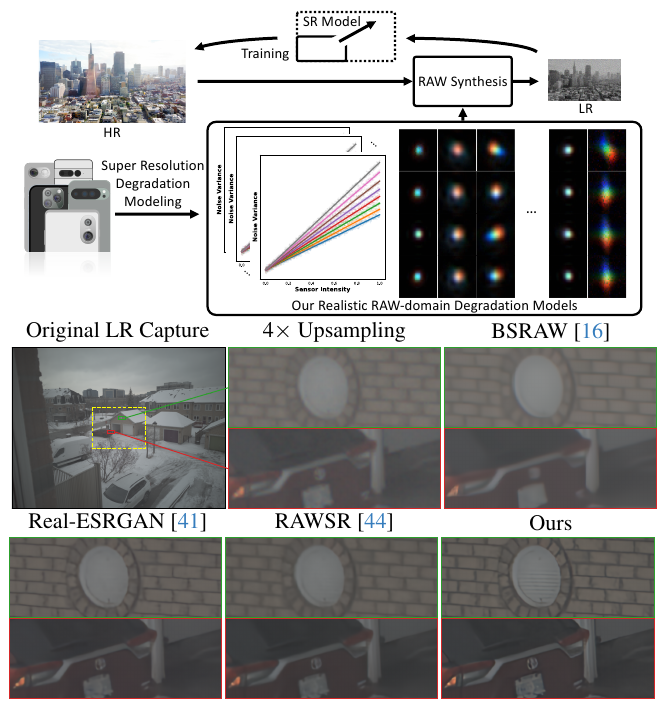
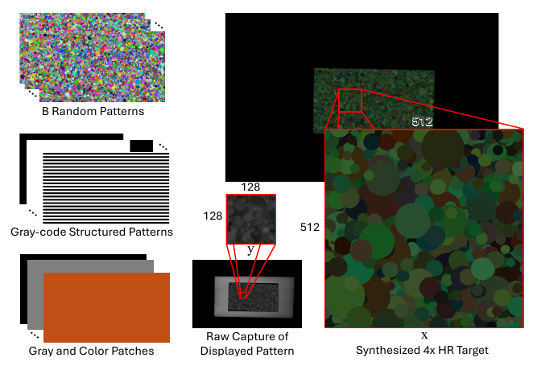
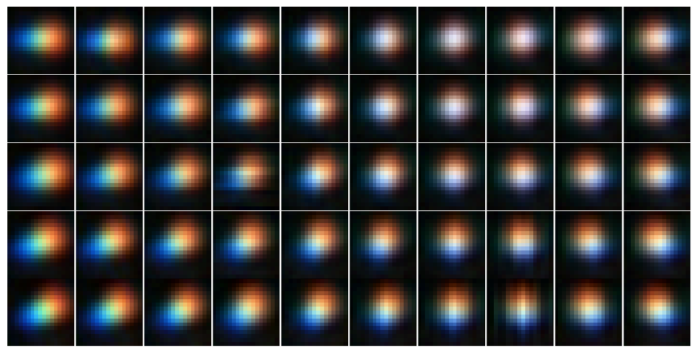
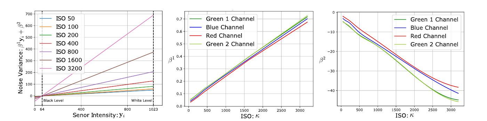
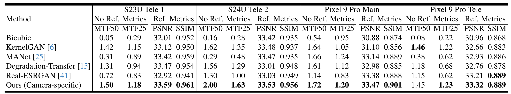
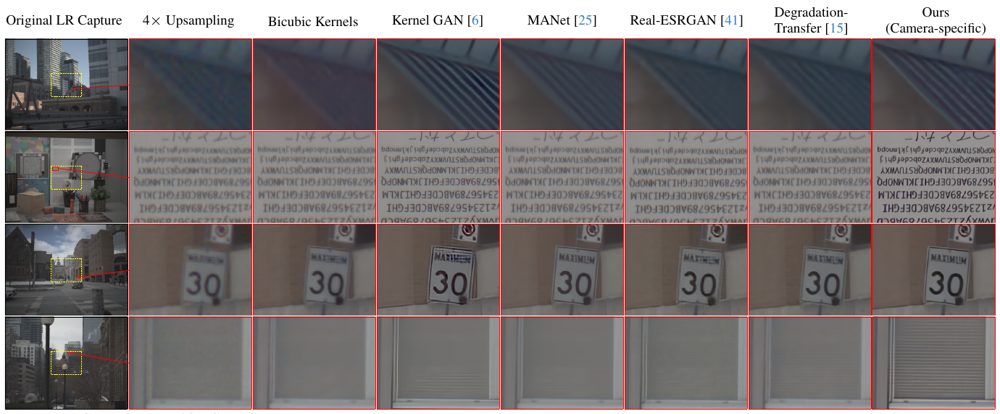
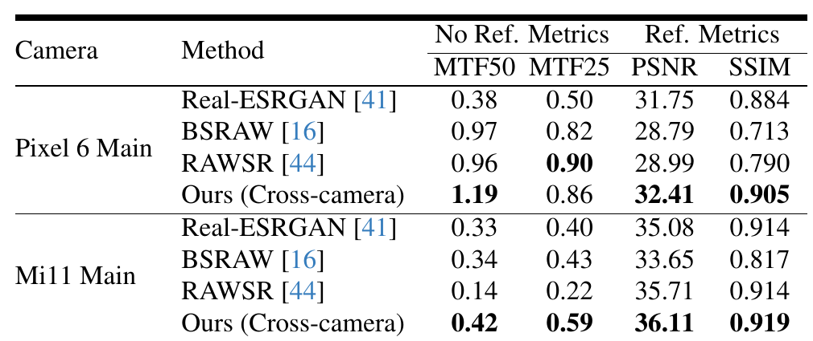
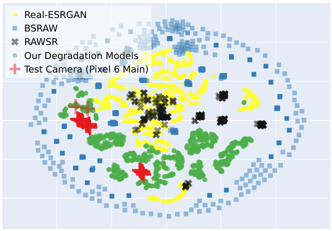

论文
RAW 域退化模型：逐台手机标定 SR 核与噪声，再用逆处理数据训练真实手机超分

代码说明：arXiv 页和论文正文都没有代码链接，论文只承诺「will make our calibrated kernels and noise models publicly available」。我在 SamsungLabs 组织下找到一个名字对得上的仓库
SamsungLabs/raw_sr_degrdation_models，描述是 "Codebase for an unprocessing pipeline to generate paired data for RAW SR model training"，2026-05-06 创建。但到 2026-10-27 为止它只有一次提交（ca6369c，2026-05-28），内容是一个 27 字节、只写了标题的 README，没有代码、核文件或噪声参数（repo/README.md即这份克隆）。Papers with Code 和 GitHub 搜索也没有其他实现。所以本页代码分两类：本文方法一律写成按论文公式和补充材料整理的等价伪代码，并在出处行标明；作为对照的 Unprocessing 代码是逐字引用，来自本站 unprocessing-2018 页克隆的timothybrooks/unprocessing（commit9928956）。
专项定位：这篇放在「手机照片 → 相机画质：细节与质感迁移」专项里读（入口 phone2camera-2026）。专项调研指出过一个缺口：unprocessing-2018 的逆 ISP 全是逐点运算，没有镜头 PSF 和下采样，造出来的「伪 iPhone RAW」会太干净、太锐。本文要补的正是这块：它把 PSF、像素积分和下采样当成一个可以实测的核，逐设备标定，然后在 RAW 域里施加。§6 专门讨论这套标定能不能照搬到 iPhone 和目标相机两侧。
1. 出发点：手机超分缺真值，合成退化又不像
手机镜头小、传感器小，数字变焦只能靠超分。超分模型需要成对数据，而手机的成对数据很难拿。论文 §1 列了两种现成做法，都很费力：一种是两台不同画质的相机同时拍同一场景（pynet-2020 的 Zurich 数据集就是这么来的），另一种是同一台相机用不同焦距拍（zoom-to-learn-2019 的 SR-RAW）。两种都要静态场景、精确对齐，还要和错位作斗争。
于是大家转向合成数据：拿 HR 图，按一个退化模型造出 LR。问题出在退化模型上。论文 §1–2 归纳了三点：
- 模糊核是猜的。 Real-ESRGAN、BSRAW、RAWSR 一类方法从一个「退化池」里随机采各向同性或各向异性高斯核，核大小和标准差范围是手调的超参，对结果影响很大，但没有任何保证它们和某台手机真实的 PSF 对得上。
- 噪声参数没标定。 噪声模型无论是同方差还是异方差，参数都需要针对具体传感器标定，退化池通常也是随机采。
- 退化加在了错误的域里。 多数管线在 sRGB 上加模糊和噪声，而物理上模糊和噪声发生在 ISP 之前的线性 RAW 域。sRGB 已经过非线性处理，在那里加退化会引入域差。
作者的主张是：与其让退化池「足够多样」，不如让它「足够真」。他们在若干台手机上把模糊和噪声实测出来，用这些实测退化把公开的高质量图逆处理成各台手机的 LR RAW，训练一个 RAW→RGB 的单帧超分模型。这里有一个关键假设：各家手机的 ISP 不同，但镜头和传感器彼此相近，所以几台手机的实测退化合起来，能覆盖一台没见过的手机。作者用两台留出设备检验这个假设。
论文列的贡献有四条：在马赛克 RAW 域里标定 SR 核的方法；把逐设备退化接进 RAW 合成的盲超分流程；在未知退化的测试图上达到最好结果，说明各手机的退化分布确实有重叠；一份覆盖多台手机的核与噪声标定数据集（承诺发布，尚未发布）。
SR 核（SR kernel）
把「高分辨率场景」变成「低分辨率传感器读数」的那个模糊核，定义在 HR 网格上。本文的 SR 核同时包含镜头 PSF 和像素自身的积分效应。
PSF
点扩散函数：一个理想光点经过镜头后在像面上摊成的光斑形状，镜头越差光斑越大、越不对称。
像素积分 / 微透镜
每个像素把落在自己面积上的光加起来再读出，上面还有一层聚光微透镜，这本身就是一次低通。
HG 噪声
异方差高斯噪声：方差 = β¹·信号 + β²。β¹ 对应光子散粒噪声，β² 对应读出噪声，两者都随 ISO 变。
格雷码结构光
在屏幕上依次显示一组黑白条纹，每个屏幕像素的位置被编码成一串明暗序列，相机解码后就知道传感器上每一点对应屏幕哪个像素。
单应 H
3×3 矩阵，描述「平面到平面」的透视映射，这里用来把显示器坐标映射到传感器坐标。
逆处理（unprocessing）
把渲染好的 RGB 图按相机流水线反向推回 RAW，用来批量造 RAW 训练对。
MTF50 / MTF25
调制传递函数降到 50% / 25% 对比度时的空间频率。数值越高，系统能分辨的细节越细。
西门子星
一个由放射状黑白扇区组成的测试图，越靠圆心频率越高，可以一次读出各个频率的对比度。
退化池
训练时随机抽取的一大堆模糊核、噪声、缩放方式组合，靠多样性换泛化，代表是 Real-ESRGAN。
盲超分
测试时不知道 LR 图的具体退化，模型必须对一类退化都管用。本文的跨设备实验就是盲超分。
像素合并（binning）
高像素传感器把相邻几个同色像素合成一个读出，输出普通 Bayer。本文所有 RAW 都是合并后的版本。
2. 方法：先实测退化，再用它逆处理
整篇方法分三块：用显示器标定 SR 核（§2.2），用色卡连拍标定噪声（§2.3），用两者合成训练对（§2.4）。网络和评测在 §2.5、§2.6。
2.1 成像模型：一个核同时装下镜头和像素
论文 Eq. 1 把 LR RAW 的形成写成：
—— 翻译: 拿一张清晰的 HR 线性图 x，先用核 K 模糊，再每隔 s 个像素取一个（↓s），然后按 Bayer 排列只保留每个位置的一种颜色（马赛克算子 M），最后加上传感器噪声 n，就得到手机拍到的 LR RAW y。
这条式子本身是盲超分的标准写法，本文的不同在于 K 的定义。常见做法把 K 拆成「镜头 PSF」接一个「bicubic 下采样」。作者认为这不对：SR 核是镜头 PSF 和传感器离散化的组合，像素尺寸、微透镜的光学特性都会影响它 [§3.1]。所以他们不去单独测 PSF，而是直接测「HR 场景 → 传感器读数」的整体核。
类比：把传感器想成一排雨量桶，HR 场景是天上下的雨。镜头 PSF 像一阵风，把雨点吹散到邻近位置；像素积分像桶口，一个桶把落在桶口范围内的雨全收进去。最后量到的是「风吹 + 桶口」两者叠加的结果。本文的做法是直接用「已知的雨」去量这个叠加，而不是分别测风和桶口再假设它们怎么组合。
数值例子：s = 4 时，一个 LR 像素对应 HR 网格上 4×4 = 16 个点。论文图 6 说核是 21×21（定义在 HR 网格上），换算到 LR 网格约 21/4 ≈ 5.3 个像素宽。也就是说，一个手机像素读到的值，混进了周围大约 5×5 个像素范围内的光。
2.2 SR 核标定：让手机拍显示器
标定装置在补充材料 §S1：暗室里，一台校色过的 UHD 显示器 1:1 显示 HR 图案，手机装在三脚架上对着拍。调节距离 d，使显示器上 M 个像素恰好成像到传感器上 N 个像素，M = sN，于是天然就是 s 倍的超分配对。补充材料写的是「s = f/d」。这个式子量纲不对，§4 再说。

显示的图案要先经过三道变换才变成「传感器眼里的 HR 场景」：几何上要投影到传感器坐标（W，参数是单应 H），辐射上要把显示器的非线性响应拉直并换到传感器颜色空间（D⁻¹），还要乘上镜头暗角和背光不均匀造成的亮度场（v）。论文 Eq. 2 把整条链写成：
—— 翻译: 显示器上的图案 x́ 先按单应 H 变形到传感器坐标，再经 D⁻¹ 线性化、乘暗角场 v，得到 HR 目标 x；然后 R、G、B 三个通道各用自己的核 K 模糊，↓s 下采样，按 CFA 抽成马赛克，就是「预测的 RAW」ỹ。三个通道分开用核，是因为镜头对不同波长的成像不同（色差）。
核通过最小化「预测 RAW」和「实拍 RAW」的差来求（论文 Eq. 3）：
—— 翻译: 找三个核，再顺带微调单应 H，让模拟出来的马赛克 RAW 和实拍 RAW 尽量一致。损失 L 用 ℓ1，直接在马赛克 RAW 域里算，所以不受任何去马赛克算法的影响。
几个让这个优化可解的工程细节 [§3.1, §4.1, 补充 S2–S3]：
- 分块求解。 核随视场位置变化，所以把 4× 变焦对应的视场切成 128×128 的 RAW 块，每块独立求一组核，HR 块是 512×512。
- H 联合优化。 先用 23 条竖向 + 23 条横向格雷码条纹建立屏幕像素和传感器像素的稠密对应，拟合一个全局单应作初值；再在每个块里把 H 当成变量和核一起优化。理由是平面假设不严格，边缘处的强模糊也会让对齐特征偏移。
- 随机图案，B = 20。 用一批随机结构的图案（图 2 里是彩色圆片叠成的），避免核偏向某种特定纹理。作者认为有了足够多的配对，问题就是适定的，所以不加任何先验：不约束非负，不约束能量守恒，也不加稀疏。
- 100 帧平均当无噪观测。 Eq. 2 假设无噪，所以每张图案在最低 ISO 下连拍 100 帧取平均，曝光调到显示器白色对应传感器白电平的约 80%，既有对比度又不饱和。
- 两电平线性化。 显示器的响应是非线性的。完整做法是显示 255 级灰阶拟合响应曲线 f，再显示 ColorChecker Digital SG 的 140 个色块求一个 3×3 CCM（补充 Eq. S1）。但随机图案每个通道只取 0 和最大值两种电平，就可以绕开中间的非线性，只用一张白场和一张黑场拍摄完成线性化，并顺带得到暗角场（补充 Eq. S3）：
—— 翻译: y₁ 是全白屏的 RAW，y₂ 是全黑屏的 RAW，b、w 是传感器黑电平和白电平。图案某处如果是「白」（x = max），这里就取白场读数；如果是「黑」，就取黑场读数；再减黑电平、除以量程归一化到 [0,1]。暗角和背光不均直接包含在逐像素的 y₁、y₂ 里，不需要单独建模。
数值例子（我的估算）：每个块的未知数是 3 个通道 × 21×21 = 1323 个核系数，加上单应的 8 个自由度。观测是 20 张图案 × 128×128 = 327,680 个 RAW 值。观测量是未知数的约 250 倍，所以不加先验也能稳定求解，作者「适定」的说法在数量上站得住。
下面是按 Eq. 2–3、§4.1 和补充 S2–S3 整理的标定流程：
等价伪代码 — 非原文逐字；依据论文 Eq. 2–3、§4.1、补充 Eq. S3 与 S3 节（官方仓库无代码）
s, N, B = 4, 128, 20 # 4× 超分；LR 块 128×128；20 张随机图案
H0 = fit_homography(graycode_pairs) # 23 竖 + 23 横格雷码条纹 → 全局单应初值
y1 = mean(burst(white_field, n=100)) # 全白屏 RAW（Eq. S3 的 y1）
y2 = mean(burst(black_field, n=100)) # 全黑屏 RAW（Eq. S3 的 y2）
ys = [mean(burst(p, n=100, iso=LOWEST)) for p in patterns] # 100 帧平均 ≈ 无噪 RAW
for blk in fov_blocks(zoom=4, size=N): # 核随视场变化，逐块独立求解
K = {c: zeros(21, 21) for c in "rgb"} # 不加非负 / 归一 / 稀疏先验
H = H0.copy()
opt = Adam([K["r"], K["g"], K["b"], H])
for _ in range(ITERS): # 迭代次数论文未给
loss = 0
for b in range(B):
xw = warp(patterns[b], H, out=(s * N, s * N)) # W(x́, H)，可微
# Eq. S3：y1/y2 是 LR 马赛克，如何变成 HR 三通道论文未写，这里假设插值
x = (xw * up(y1[blk] - y2[blk]) / MAXV + up(y2[blk]) - BLACK) / (WHITE - BLACK)
y_hat = mosaic(downsample(conv_per_channel(x, K), s), CFA) # Eq. 2
loss += l1(ys[b][blk], y_hat) # Eq. 3：在马赛克 RAW 域比较
opt.step(loss)
kernel_pool.add(camera, blk, K)

2.3 噪声标定：按 ISO、按 Bayer 通道
噪声用的是标准的异方差高斯（HG）模型 [§3.2]：
—— 翻译: 像素 i 的噪声是零均值高斯，方差随无噪信号 yᵢ 线性增长。斜率 β¹ 描述光子散粒噪声（越亮越大），截距 β² 描述读出噪声（与信号无关）。两个参数都依赖 ISO 档位 κ 和颜色通道 c。
具体做法 [§3.2, §4.1]：
- 按 ISO 分档。 标定 7 档 ISO：50、100、200、400、800、1600、3200。
- 按 Bayer 通道分开。 c ∈ {r, g₁, g₂, b}，两个绿通道也分开建模。
- 沿连拍方向取样。 拍色卡（ColorChecker）的 RAW 连拍，在均匀色块里沿帧方向估方差，抵消光照不均的影响。这个做法引自 Rawgment（Yoshimura et al., CVPR 2023）。
- 对 ISO 做二次拟合。 手机自动曝光实际用的 ISO 比标称的几档密得多，所以对每个通道把 β¹、β² 各拟合成 ISO 的二次曲线，合成时如果抽到没标定过的 ISO 就用曲线插值。

等价伪代码 — 非原文逐字；依据论文 §3.2、§4.1（官方仓库无代码）
ISOS = [50, 100, 200, 400, 800, 1600, 3200]
CH = ["r", "g1", "g2", "b"] # 两个绿通道分开建模
for iso in ISOS:
frames = capture_raw_burst(colorchecker, iso) # 色卡 RAW 连拍
for c in CH:
mu, var = [], []
for patch in uniform_patches(colorchecker):
px = frames[:, patch, c] # (帧数, 像素数)
mu.append(px.mean())
var.append(px.var(axis=0).mean()) # 沿连拍方向估方差，规避光照不均
beta1[iso, c], beta2[iso, c] = linfit(mu, var) # var ≈ β1·y + β2
for c in CH: # 二次曲线，供未标定 ISO 插值
f1[c] = polyfit(ISOS, [beta1[k, c] for k in ISOS], deg=2)
f2[c] = polyfit(ISOS, [beta2[k, c] for k in ISOS], deg=2)
对照一下 unprocessing-2018 的噪声采样。Unprocessing 没有逐设备标定，它从 Darmstadt 数据集 4 台相机的元数据里拟合出一条 log-log 直线，训练时沿这条线联合采样 shot / read 两个参数，而且四个 Bayer 通道共用一组参数：
../unprocessing-2018/repo/unprocess.py:L150-L167 — Unprocessing 的噪声：跨设备的 log-log 联合采样，四通道共用（对照用，非本文代码）
def random_noise_levels():
"""Generates random noise levels from a log-log linear distribution."""
log_min_shot_noise = tf.log(0.0001)
log_max_shot_noise = tf.log(0.012)
log_shot_noise = tf.random_uniform((), log_min_shot_noise, log_max_shot_noise)
shot_noise = tf.exp(log_shot_noise)
line = lambda x: 2.18 * x + 1.20
log_read_noise = line(log_shot_noise) + tf.random_normal((), stddev=0.26)
read_noise = tf.exp(log_read_noise)
return shot_noise, read_noise
def add_noise(image, shot_noise=0.01, read_noise=0.0005):
"""Adds random shot (proportional to image) and read (independent) noise."""
variance = image * shot_noise + read_noise
noise = tf.random_normal(tf.shape(image), stddev=tf.sqrt(variance))
return image + noise
两者的方差形式完全一样（image * shot_noise + read_noise 就是 β¹y + β²），区别只在参数从哪来：Unprocessing 从一个跨设备分布里采，本文对每台设备、每档 ISO、每个通道各标一组，再用二次曲线插值。
2.4 合成训练对：四步
有了核池和噪声模型，合成训练数据分四步 [§3.3]：
等价伪代码 — 非原文逐字；依据论文 §3.3 四步与 §4.4–4.5（官方仓库无代码）
def synthesize_pair(x_lin, pool, s=4):
cam = random.choice(pool.cameras) # 跨设备实验：7 台相机的联合池
K = random.choice(cam.kernels) # 某个视场块的 (K_r, K_g, K_b)
iso = sample_iso() # 采样分布论文未给
y = to_sensor_range(x_lin, cam.black, cam.white) # ① 按黑/白电平映射到传感器量程
y = downsample(conv_per_channel(y, K), s) # ② 标定核模糊 + ↓s
y = mosaic(y, cam.cfa) # ③ 按 CFA 抽马赛克
y = y / cam.wb_gains[cfa_of(y)] # ④ 除掉白平衡增益（噪声标定时测得）……
var = cam.f1[c](iso) * y + cam.f2[c](iso) # ……再逐通道按 HG 模型加噪（c 为该像素的 CFA 通道）
y = y + normal(0, sqrt(max(var, 0))) # max(·,0) 是我加的保护，论文未提
return y, x_lin # (LR RAW 输入, HR 线性 RGB 目标)
和 Unprocessing 的 unprocess() 放在一起看，两条管线刚好互补：
../unprocessing-2018/repo/unprocess.py:L118-L147 — Unprocessing 的逆 ISP：全是逐点运算 + 马赛克，没有模糊和下采样（对照用，非本文代码）
def unprocess(image):
"""Unprocesses an image from sRGB to realistic raw data."""
with tf.name_scope(None, 'unprocess'):
image.shape.assert_is_compatible_with([None, None, 3])
# Randomly creates image metadata.
rgb2cam = random_ccm()
cam2rgb = tf.matrix_inverse(rgb2cam)
rgb_gain, red_gain, blue_gain = random_gains()
# Approximately inverts global tone mapping.
image = inverse_smoothstep(image)
# Inverts gamma compression.
image = gamma_expansion(image)
# Inverts color correction.
image = apply_ccm(image, rgb2cam)
# Approximately inverts white balance and brightening.
image = safe_invert_gains(image, rgb_gain, red_gain, blue_gain)
# Clips saturated pixels.
image = tf.clip_by_value(image, 0.0, 1.0)
# Applies a Bayer mosaic.
image = mosaic(image)
metadata = {
'cam2rgb': cam2rgb,
'rgb_gain': rgb_gain,
'red_gain': red_gain,
'blue_gain': blue_gain,
}
return image, metadata
Unprocessing 有色调曲线逆、gamma 逆、sRGB→相机 RGB 的 CCM 逆、白平衡逆，但没有任何空间操作。本文正好相反：有实测的空间核和下采样，颜色这边只逆了白平衡增益，没有 CCM 逆，直接把线性 RGB 当成传感器 RGB 用。对专项来说，把两者拼起来才是完整的「伪 iPhone RAW」合成器（§6）。
2.5 网络与训练数据
网络刻意用得很普通，好让差异只来自数据 [§4.4, §4.5]：
- 骨干：ESRGAN 的 RRDBNet。RAW 输入按 2×2 打包成 4 通道（论文写 GBRG 顺序），因为打包让分辨率减半，所以在最后一个卷积块前加一个上采样层。
- 损失：只用 ℓ1，不用 GAN 和感知损失，理由是避免幻觉伪影。这一点对解读结果很重要：这里的 MTF 提升不是生成模型「画」出来的。
- 单设备实验的数据：DIV2K 的 900 张训练图切 256×256 块，退化池只放这一台相机的核和噪声。KernelGAN、MANet 的核是在 RGB 域估的，所以这些基线前面接一个固定的、可微的线性去马赛克器，避免域差。
- 跨设备实验的数据：MIT-Adobe FiveK（论文记作 MA5K）里由多种单反拍的 RAW。作者先用 Adobe Lightroom 做 RAW 降噪，再用 DCRAW 去马赛克，得到的线性 RGB 当 HR 真值；退化池放 7 台相机的核和噪声。
2.6 评测：同一台显示器，加西门子星
真实场景没有 HR 真值。用单反同拍当参考需要两机同步，单反变焦镜头的浅景深也会让参考比 LR 还糊。作者的办法是继续用那台显示器 [§4.2, 补充 S4]：
- 有参考指标：从 MIT-Adobe FiveK 挑高质量图显示在屏幕上，手机拍 LR RAW。真值先按补充 S2 线性化到传感器域，RAW 用双线性去马赛克后乘元数据里的白平衡；真值 bicubic 缩到 ROI 的正好 4 倍，做直方图匹配，再依次用标定好的单应和预训练光流（PWC-Net）对齐，然后算 PSNR / SSIM。每台相机 30 对。
- 无参考指标：拍一张 3×6 排列的 20 辐西门子星，测 SR 输出的 MTF50 和 MTF25。MTF 的绝对值对拍摄距离敏感，所以报的是相对 LR 的提升：
—— 翻译: SR 输出能保持 50%（或 25%）对比度的最高频率，比 LR 输入高出百分之多少。0 表示没有提升，1.00 表示频率翻倍。
这个式子论文没有明写，是我用补充图 S5 的数字反推的：Pixel 9 Pro Main 的一颗星，LR 的 MTF50 = 0.24、SR 输出 0.53，(0.53 − 0.24)/0.24 = 1.21；MTF25 从 0.35 到 0.63，(0.63 − 0.35)/0.35 = 0.80，和图中标注的 1.21、0.80 一致。论文正文把 2.00 解释为「频率提高 200%」，也符合这个定义。表中的值是视场内所有星的平均。
3. 结论：实测退化比随机退化池强，提升主要体现在 MTF 上
3.1 用了哪些手机
论文 §4 正文说标定了 9 个手机摄像头（引言和贡献里写的是 8 个，§4 再说）。规格来自补充 Table S1，「角色」一列是我按 §4.4、§4.5 整理的：
| 摄像头 | 光学倍率 | 焦距 | 传感器 | 像素 | 采集的 RAW 分辨率（括号内为合并前像素数） | 在实验中的角色 |
|---|---|---|---|---|---|---|
| Samsung S23+ Main | 1× | 23 mm | 1/1.56" | 1.0 µm | 4080×3060（50MP） | 跨设备训练池 |
| Samsung S23+ Tele | 3× | 69 mm | 1/3.94" | 1.0 µm | 3648×2736 | 跨设备训练池 |
| Samsung S23U Main | 1× | 24 mm | 1/1.3" | 0.6 µm | 4080×3060（200MP） | 跨设备训练池 |
| Samsung S23U Tele 1 | 3× | 69 mm | 1/3.52" | 1.12 µm | 3648×2736 | 训练池；单设备测试 |
| Samsung S24U Tele 2 | 5× | 111 mm | 1/2.52" | 0.7 µm | 4080×3060（50MP） | 训练池；单设备测试 |
| Google Pixel 9 Pro Main | 1× | 25 mm | 1/1.31" | 1.2 µm | 4080×3072（50MP） | 训练池；单设备测试 |
| Google Pixel 9 Pro Tele | 5× | 113 mm | 1/2.55" | 0.7 µm | 4032×3024（48MP） | 训练池；单设备测试 |
| Google Pixel 6 Main | 1× | 26 mm | 1/1.31" | 1.2 µm | 4080×3072（50MP） | 留出测试 |
| Xiaomi Mi 11 Main | 1× | 25 mm | 1/1.52" | 0.7 µm | 6016×4512（108MP） | 留出测试 |
采集用 Android 上的 ProShot，通过 ADB 远程控制，满足三条要求：能拿到 RAW、ISO / 快门 / 对焦全手动、能 RAW 连拍。连拍很关键，作者发现逐次触发快门时 OIS 会带来随机位移，即使在无振动的远程拍摄里也一样。ProShot 拿不到未合并的 RAW，所以所有核和噪声都对应合并后的 Bayer。S24U 的主摄和 Tele 1 与 S23U 相同，没有重复标定；超广角不用于数字变焦，也没标。
3.2 单设备：同一台手机的核训练、同一台手机测试

几组关键数字：
- MTF50 提升最明显的是 S24U Tele 2：本文 2.00，次好的 KernelGAN 1.62，MANet 只有 0.29。论文用它举例：MANet 核只让 MTF50 提高 29%，本文提高 200%。
- S23U Tele 1：MTF50 1.50，KernelGAN 1.42，Real-ESRGAN 0.72，bicubic 核 0.05。
- PSNR 的差距很小。四台相机上本文比最好的基线只高 0.05–0.12 dB（S23U Tele 1：33.59 对 33.47；S24U Tele 2：33.53 对 33.48；Pixel 9 Pro Main：33.47 对 33.38；Pixel 9 Pro Tele：33.32 对 33.21）。连 bicubic 核都不远：S24U Tele 2 上 33.42，只差 0.11 dB，但它的 MTF50 是 0.16，本文是 2.00。在这套显示器配对上，PSNR 几乎分不出锐度差异，真正拉开差距的是 MTF。
- 并非全面领先：Pixel 9 Pro Tele 的 MTF50 是 KernelGAN 1.46 略高于本文 1.45（论文表里自己把 1.46 加粗了）；Pixel 9 Pro Main 的 MTF25 是 MANet 1.24 高于本文 1.20（表里却把本文的 1.20 加粗了）。表注「在所有指标上都优于基线」与表内数字不符。

3.3 跨设备：留出 Pixel 6 Main 和 Mi 11 Main
这是论文最想证明的一点：只用 7 台相机的标定结果训练，到没见过的手机上是否仍然有效。

| 留出设备 | 方法 | MTF50 | MTF25 | PSNR | SSIM |
|---|---|---|---|---|---|
| Pixel 6 Main | Real-ESRGAN | 0.38 | 0.50 | 31.75 | 0.884 |
| BSRAW | 0.97 | 0.82 | 28.79 | 0.713 | |
| RAWSR | 0.96 | 0.90 | 28.99 | 0.790 | |
| 本文（跨设备） | 1.19 | 0.86 | 32.41 | 0.905 | |
| Mi 11 Main | Real-ESRGAN | 0.33 | 0.40 | 35.08 | 0.914 |
| BSRAW | 0.34 | 0.43 | 33.65 | 0.817 | |
| RAWSR | 0.14 | 0.22 | 35.71 | 0.914 | |
| 本文（跨设备） | 0.42 | 0.59 | 36.11 | 0.919 |
- Pixel 6 Main 上，本文 PSNR 比最好的基线（Real-ESRGAN）高 0.66 dB，MTF50 比最好的（BSRAW）高 0.22；MTF25 输给 RAWSR（0.86 对 0.90）。
- Mi 11 Main 上，PSNR 比 RAWSR 高 0.40 dB，MTF50 比 BSRAW 高 0.08，四项指标全部最好，但所有方法的绝对 MTF 提升都不大（最好也只有 +42%）。
- BSRAW 做的是 RAW→RAW，作者用 DCRAW 把它的输出转成 RGB 再比。为排除这一步的影响，补充 Table S2 把本文的 RGB 输出重新马赛克，在 4 通道 Bayer 上和 BSRAW 的 RAW 输出比较：Pixel 6 Main 上 29.14 对 28.75（只差 0.39 dB，主表里是 3.62 dB），Mi 11 Main 上 39.72 对 33.17（差 6.55 dB，主表里是 2.46 dB）。两台设备的差距朝相反方向变化，论文没有解释。

总结：在 RAW 域里用实测的核和噪声造数据，比从随机池里采样效果更好。这在单设备和跨设备两种设定下都成立，主要体现在 MTF 上；PSNR 的差距在单设备时只有 0.1 dB 量级，跨设备时 0.4–0.7 dB。
4. 实现细节与论文自洽性核对
官方仓库是空的（repo/README.md 只有一行标题，见文首说明），所以没法做论文与代码的对照。下面能核对的是论文自身的一致性，以及复现时会卡住的未说明细节，每条都标了出处：
- 标定了几台相机，说法不一致。 摘要后的贡献列表和引言都写「eight mobile cameras」[§1]，§4 正文列了 9 个摄像头，补充 Table S1 也是 9 行。跨设备用「7 台」训练 [Table 2 注]，按 9 − 2 = 7 算，9 才是对的。
- 距离公式量纲不对。 补充 S1 写「s = f/d」。按小孔成像，显示器像素间距 p_m 在传感器上成像为 p_m·f/d；一个传感器像素（间距 p_s）覆盖 p_s·d/(p_m·f) 个显示器像素，即 s ∝ d/f，而且必须带上两种像素间距。距离越远，每个传感器像素看到的显示器像素越多，s 应该随 d 增大，原式方向反了。实际操作时用格雷码对应关系直接量 s 更可靠。
- 噪声参数的坐标系。 正文说 y 是「black-level/white-level corrected」的 [0,1] 值 [§3.1]，但图 3 的噪声直线横轴是未减黑电平的 10-bit 码值，β² 全为负（§2.3 图注）。如果把图 3 的 β 直接套到 [0,1] 归一化数据上，暗部方差会算成负数。论文没说合成时用的是哪个坐标系、要不要截断。
- Table 1 的「全部指标领先」与表内数字不符。 Pixel 9 Pro Tele 的 MTF50 是 KernelGAN 1.46 对本文 1.45；Pixel 9 Pro Main 的 MTF25 是 MANet 1.24 对本文 1.20；Pixel 9 Pro Tele 的 SSIM 和 Real-ESRGAN 打平（0.889）[Table 1]。Table 2 里 Pixel 6 的 MTF25 也是 RAWSR 更高。
- 主表和补充表的 BSRAW 比较对不上。 Table 2 用 sRGB 比，Table S2 在 Bayer 域比，两台设备的差距朝相反方向变化（§3.3）。Pixel 6 上主表的 3.62 dB 优势，在 Bayer 域只剩 0.39 dB，说明主表里相当一部分差距来自 DCRAW 渲染这一步，而不是 SR 本身。
- 颜色这一侧几乎没交代。 合成只做了黑/白电平映射和白平衡增益的逆 [§3.3]，没有 CCM 逆，也没说 HR 目标是白平衡前还是白平衡后、是相机 RGB 还是 sRGB 原色。白平衡增益「在噪声标定时获得」，听起来是每台相机一组固定值，那么网络学到的就是一个固定增益。所有可视化都「用相近增益重新白平衡并做 gamma」[Fig. 4、5 注]，也说明输出的颜色不能直接看。
- 非负、能量守恒都没约束，合成时核是否归一化也没说。 核不归一化的话，模糊会改变整体亮度，黑电平偏移也会被一起卷积 [§3.1, §3.3]。伪代码 ① 和 ② 的顺序照论文写，但实际实现很可能要先减黑电平再卷积。
- 几个超参没给：标定的迭代次数和学习率、核的初始化、ISO 的采样分布、每台相机每个块存几组核、跨设备池里不同相机的采样比例，都没有 [§4.1, §4.5]。核尺寸 21×21 只在 Fig. 6 的图注里出现过一次。
- 网络名字前后不一。 §4.4 写 「RDBNet architecture [40]」，§4.5 写「RRDBNet architecture used in [40]」。[40] 是 ESRGAN，应为 RRDBNet。§4.5 说输入按 GBRG 打包，但 9 台相机的 CFA 相位不一定相同，相位怎么统一没说。
- 单设备实验里基线的噪声怎么加，没说。 只说「每种退化基线用相同 HR 数据训一个模型」[§4.4]。KernelGAN、MANet、Degradation-Transfer 只提供核，它们配的是本文的标定噪声还是别的噪声，会直接影响比较的公平性。
- HR 真值不是「无退化的场景」。 跨设备实验的真值是 MIT-Adobe FiveK 单反 RAW 经 Lightroom 降噪、DCRAW 去马赛克的结果 [§4.5]，自带单反的 PSF、Lightroom 的降噪纹理和 DCRAW 的去马赛克伪影；Eq. 1 却把 x 当作清晰的潜在图像。s = 4 时单反自身的模糊在 ↓4 后大多可以忽略，但降噪留下的「塑料感」会原样成为训练目标。
- 标定和定量评测共用同一台显示器。 核是对着这台显示器标的，30 对 PSNR 测试图和西门子星也是对着它拍的 [§4.2, 补充 S4–S5]。核里会带上这台显示器的像素结构和残余线性化误差，本文方法因此天然更贴合测试域；KernelGAN、MANet 的核是从真实照片估的，没有这个优势。真实三维场景只有定性图。
5. 批判性总结
Strengths
- 把「退化池调参」换成了可测量的物理量。 核和噪声都来自实测，流程每一步都有明确的标定物（格雷码、白场 / 黑场、随机图案、色卡），换一台设备可以照着重做。
- 两电平图案是个聪明的工程选择。 随机图案每个通道只用 0 和最大值，显示器的非线性就只剩两个点需要知道，白场 / 黑场两张拍摄同时解决了线性化和暗角（Eq. S3），省掉了 255 级灰阶 + 140 色块的完整标定。
- 在马赛克 RAW 域算标定损失。 核和 H 直接拟合传感器读数，不经过任何去马赛克，标出来的就是「CFA 采样之前」的空间退化。
- 跨设备设定是真的留出。 Pixel 6 和 Mi 11 的核与噪声都不在训练池里，而且基线只用不需要目标设备数据的方法（Real-ESRGAN、BSRAW、RAWSR），这个比较是干净的。
- 只用 ℓ1，提升不是生成出来的。 MTF 的提升来自数据更准确，不是 GAN 编出的纹理。
Limitations / open questions
- 没有消融。 核和噪声各贡献多少？逐块的空间变化核比「每台相机一个平均核」好多少？二次 ISO 拟合有没有用？都没有实验。对一篇以「建模更准」为卖点的论文，这是最大的缺口。
- 没有和真实配对训练比。 论文证明了「实测合成 > 随机合成」，但没有和 SR-RAW（zoom-to-learn-2019）这类真实配对数据训练的模型比。「精细合成能否替代真实配对」这个问题它没有回答。
- 没有跨设备的上界。 留出设备的核其实也标定了（图 8 画出了 Pixel 6 的核），却没报告用它自己的核训练的单设备结果。所以不知道「没见过这台手机」到底损失了多少。
- 留出设备和训练池里的一台规格完全相同。 按 Table S1，Pixel 6 Main 和训练池里的 Pixel 9 Pro Main 都是 1/1.31"、1.2 µm、4080×3072（50MP），焦距只差 1 mm。论文自己排除了「跨机型共用的摄像头」（S24U 与 S23U 的主摄），却没讨论这一对。规格差异更大的 Mi 11 上，本文的领先也确实更小（PSNR +0.40 dB，MTF50 +0.08）。
- PSNR 区分度很低，MTF 又奖励过冲。 单设备时 PSNR 差距只有 0.1 dB 量级，主要结论靠 MTF；而 KernelGAN 有明显振铃，MTF50 仍有 1.64（Pixel 9 Pro Main）。缺少一个同时惩罚振铃和模糊的指标。
- 适用范围窄。 只做了 4×，只覆盖 ISO 50–3200，作者自己也说结论只适用于手机、良好光照，不指望推广到单反或暗光 [§5]。对焦距离固定在显示器那个距离，真实场景的离焦和景深变化没有建模。
- 承诺的数据还没放出。 7 个多月过去，官方仓库仍是空的。
When to use / not use
- 适合：手里有一台（或几台）固定镜头的手机，要做 RAW 域超分、去马赛克或去噪，又没有成对真值；愿意花一次暗室标定的功夫，换取一个可以无限造数据的、物理上可信的退化模型。
- 不适合：目标是学一台相机的「风格」或 ISP 后端质感（锐化、降噪纹理、色调），因为本文只标到 RAW 为止；可换镜头、可变光圈的相机，因为 PSF 随光圈、对焦距离、变焦都会变，标定量会成倍增加；暗光场景。
延伸阅读：与相似工作的交叉验证
| 工作 | 核心结论 | 关键观察 | 与本文的异 / 同 |
|---|---|---|---|
| 本文 | 逐设备实测 SR 核 + 噪声，在 RAW 域合成，优于随机退化池；几台手机的标定能泛化到没见过的手机 | 单设备 PSNR 只领先 0.1 dB 量级，MTF50 最多 2.00 对 1.62；留出设备 +0.40–0.66 dB | — |
| unprocessing-2018 | 把 sRGB 逐步逆 ISP 回 RAW、加按 ISO 采样的 shot/read 噪声，合成数据就能在真实 RAW 去噪上胜出 | 噪声模型贡献最大；逆 ISP 全是逐点运算，没有 PSF | 同：都相信「物理上对的合成数据」够用，噪声都是 HG 形式。异：Unprocessing 做了 CCM / 色调逆但没有空间退化，噪声参数是跨设备分布；本文有实测空间核、逐设备噪声，却跳过了 CCM 逆。两者是互补的两半 |
| zoom-to-learn-2019 | RAW 超分要用真实光学变焦配对训练；合成 RAW 比真 RAW 低 2.90 dB | 它的合成器只在 gamma 域加 i.i.d. 高斯，没有逆 CCM，也没有 shot noise | 异（表面矛盾）：它说合成不够，本文说合成可以很好。但它的合成器很粗，而本文没有和真实配对比，两篇的结论其实没有正面交锋 |
| realsr-2019 | 同一相机变焦拍出的真实配对，比任何合成退化都有效（×2 +1 dB） | MD（多种合成核与噪声）相对 BD（bicubic）只多 0.01–0.03 dB | 同：都认为「随机多样的合成退化」几乎没用，RealSR 的 MD≈BD 和本文的「随机池不如实测」是同一现象。异：RealSR 的答案是放弃合成、改拍真实配对；本文的答案是把合成做准 |
分歧的成因：三篇对「合成数据够不够用」的结论不同，差别主要在合成器有多准和任务是否涉及空间结构。去噪只需要噪声模型对（Unprocessing 成立）；超分还需要 PSF、像素积分、色差这些空间退化。Zoom-to-Learn 和 RealSR 用的合成器恰好缺这一块，所以合成不如真实配对。本文把空间退化实测出来以后，合成数据重新变得有竞争力。不过本文只和其他合成方法比，「精细合成 vs 真实配对」仍然是空白。
相关工作：handheld-mfsr-2019（多帧 RAW 合并，用手抖带来的亚像素位移拿到真实细节，和本文的单帧超分是两条路线）；c5-2020（用 DNG 色彩矩阵经 XYZ 在相机之间转换颜色，正好补上本文缺的 CCM 逆）；raw-diffusion-2024 与 rawgen-2026（学习式的 RGB→RAW 生成，是手写退化模型之外的另一条路）；pynet-2020（双机真实配对的代表）。
6. 研究启发：逐设备标定能否搬到 iPhone 和目标相机两侧
先把论文到底标定了什么列清楚，再逐个回答专项的问题。
| 退化量 | 标定了吗 | 怎么标 | 标定物 / 拍摄流程 | 结果形式 |
|---|---|---|---|---|
| 镜头 PSF + 像素积分 + 4× 下采样 | ✅ 作为一个整体核 | Eq. 2–3，ℓ1 + Adam 联合优化核与单应 | 暗室，UHD 显示器 1:1 显示；距离调到 M = 4N；23+23 条格雷码定位；白场 / 黑场线性化；20 张两电平随机图案，每张最低 ISO 连拍 100 帧平均，白色约为白电平的 80% | 每个 128×128 视场块一组 R/G/B 三个 21×21 核（HR 网格） |
| 传感器噪声 | ✅ | HG 模型线性拟合 + ISO 二次拟合 | 色卡均匀色块，RAW 连拍，7 档 ISO（50–3200） | 每档 ISO × 每个 Bayer 通道（r, g₁, g₂, b）一组 (β¹, β²)，加插值曲线 |
| 黑 / 白电平、CFA 排列 | ✅（读元数据） | — | — | 合成第 ①③ 步使用 |
| 白平衡增益 | ✅（随噪声标定一起测） | — | 色卡 | 合成时先除掉增益再加噪 |
| CCM、色调曲线、去马赛克、锐化、降噪、JPEG | ❌ | — | 只为线性化显示器标了一个「显示器 → 传感器」CCM，不属于手机 ISP | 去马赛克交给网络学，其余不建模 |
| 离焦 / 对焦距离、光圈、暗光 | ❌ | — | 对焦固定在显示器距离；良好光照 | 不覆盖 |
1. iPhone 侧：整套标定可以照搬，前提是拿到真 Bayer RAW 连拍
流程本身和设备无关，只需要一台显示器、一个暗室和色卡。卡点在采集工具，论文对 ProShot 提的三条要求同样适用于 iPhone：能输出单帧 Bayer DNG（不能用 ProRAW，它已经多帧合成并去马赛克，CFA 结构没了）；ISO、快门、对焦全手动；能 RAW 连拍，因为逐次触发时 OIS 会让帧间错位，100 帧平均就失效了。另外要先确认拿到的是不是像素合并后的 Bayer：论文的所有核都是合并后的核，iPhone 也一样，输出哪种 RAW 就标哪种。多摄 iPhone 的每个模组都是独立的镜头和传感器，要各标一套。噪声标定可以拿 DNG 的 NoiseProfile 标签交叉检查，它的形式也是方差 = S·x + O（x 归一化到 [0,1]），和本文的 β¹、β² 是同一个模型。
2. 给「伪 iPhone RAW」补上空间退化：把本文和 Unprocessing 拼起来
专项之前的反向造数据方案，是把目标相机 RAW 经 DNG 矩阵 / XYZ 转到 iPhone 相机 RGB，缺的是空间退化。本文正好提供这一块，拼起来的合成器是：目标相机线性 RAW → 逐点颜色转换到 iPhone 相机 RGB（c5-2020 的 XYZ 链，或 Unprocessing 的 CCM 逆）→ 按视场位置取 iPhone 的 K_r / K_g / K_b 卷积 → ↓s → iPhone CFA 马赛克 → 除以 iPhone 白平衡增益 → 按采样的 ISO 加 iPhone 的 HG 噪声。本文缺 CCM 逆，Unprocessing 缺空间核，两者拼起来正好互补。图 3 那种逐通道错开的核会自动把 iPhone 的横向色差也带进来，这是任何高斯核池都给不了的。
3. 尺度 s 要按「目标相机像素 : iPhone 像素」来选，而且最好 ≥ 2
本文的 x 是单反图，被当成「清晰场景」，这个近似之所以成立，是因为 s = 4，单反自身的模糊在 ↓4 之后大多可以忽略（§4 第 11 条）。专项里 HR 端换成了目标相机 RAW，如果两台机器在同一视场下像素数接近（s ≈ 1），目标相机自己的 PSF 就不能忽略，iPhone 核应该换成「相对核」K_rel，满足 K_iPhone ≈ K_rel * K_target。两边各自标一个 PSF 再做反卷积是病态的。我的推断（未验证）是：用同一台显示器、同一组随机图案，让两台相机都拍，然后把 Eq. 3 里的 x 换成目标相机经对齐后的 100 帧平均图，直接拟合 K_rel。格雷码对齐和两电平线性化两边都能复用。
4. 反过来刻画目标相机的「细节质感」：只能刻画到 RAW 为止
同一套装置对目标相机同样可用，能得到它在 RAW 域的逐通道空间核、视场内的变化和逐 ISO 噪声，也就是专项第 (7) 条建议的「用目标相机自己的统计量评测」的一部分。但「质感」有一大半在 ISP 后端：锐化光晕、降噪留下的纹理、色调曲线。论文对这些完全没碰。这恰好和专项的安排吻合：输出写成目标相机的 RAW，最后交给目标相机自己的 ISP 出图，那么 RAW 域需要对齐的就只是核和噪声，本文的装置正好测这两样。限制在于，可换镜头的相机 PSF 随光圈、对焦距离、焦段变化，作者自己也说不指望推广到单反 [§5]。要么固定一两组常用光圈 / 焦段只标这几组，要么只在视场中心标。
5. 评测：要「对齐目标 MTF」，而不是「MTF 越高越好」
论文的相对 MTF 是越高越好，这对超分说得通，对专项不对：目标是「像那台相机」，输出的 MTF 曲线应该贴近目标相机的 MTF 曲线，超过了就是过锐。图 6 里 KernelGAN 的振铃照样拿高分，说明单看 MTF50 会奖励过冲。可以照搬的是测量手段：两台机器在同一个显示器装置里拍 3×6 西门子星，比较整条 MTF 曲线（不只是 50% 一点），再加平场噪声功率谱。显示器配对评测（补充 S4 的线性化 → 单应 → 光流）也可以搬来做专项的小型基准，但要记住 §4 第 12 条：标定和评测共用一台显示器会偏向本文的方法。
6. 反直觉点：几百组实测核胜过 40 万个估计核
MANet 基线对每台设备估了约 40 万个核，再随机取 400 个；Real-ESRGAN 则从连续参数里随机采。本文每台相机只有 4× 视场切成 128×128 块后的那些核，按传感器尺寸估算每台几十组、7 台合计几百组（我的估算，论文没给总数）。结果 S24U Tele 2 上 MANet 核的 MTF50 只有 0.29，bicubic 核 0.16，本文 2.00。多样性本身不值钱，偏离了真实分布的多样性只会把模型教钝，这和 realsr-2019 的「MD ≈ BD」是同一个教训。对专项的含义：与其加大退化池，不如在 iPhone 上花一天把核和噪声标准。还有一个延伸用途：给标定核加上逐帧亚像素位移、↓s、加噪，就能合成带真实 iPhone PSF 的连拍，用来检验 handheld-mfsr-2019 这类多帧合并在 iPhone 上到底能恢复多少细节，比用高斯核造的合成连拍可信得多。